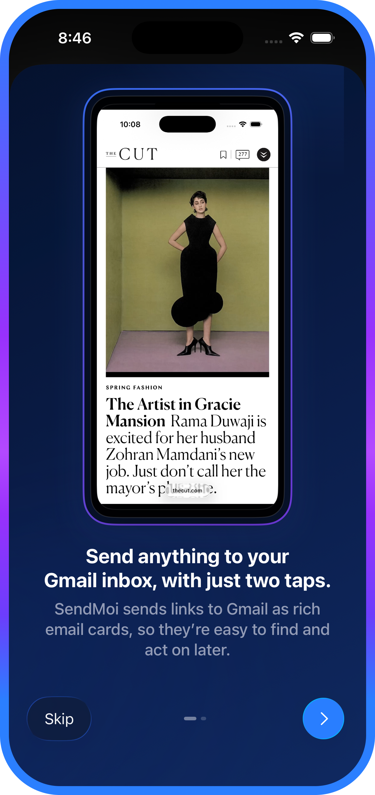
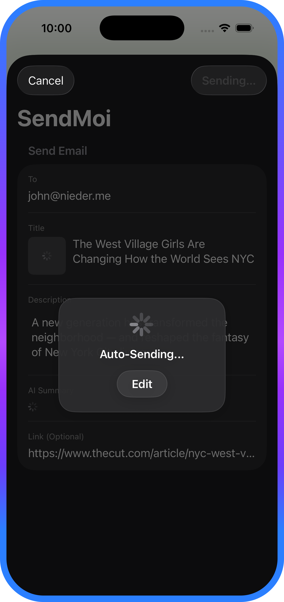

Designing for One Job
With a clear goal and my new coding agents in hand, it can be tempting to add too much. SendMoi didn’t need folders, tags, collaboration, a reading mode, or a fuller archive. It just needed to take a link, dress it up, and make sure it landed cleanly in my inbox.
That narrow brief made the design decisions more concrete. The share extension became the front door, the recipient needed to be remembered, outbound work had to be queued before delivery, and the final email had to be cleaned up enough to justify choosing SendMoi over the default Mail path.
It also made AI-assisted building more useful. I was not asking Codex and Claude Code to decide what the product should be. I used them to move through native implementation questions faster while the product rules stayed fixed.
Set It Once and Forget It
SendMoi needs two things before it can disappear into the share sheet: Gmail access and a default recipient. Onboarding had to make that setup feel guided and clear, not like plumbing. Set it once, then trust the app to handle the rest.
The same promise carried into the send moment: once the user tapped, SendMoi had to carry that responsibility, even if the share sheet closed, connectivity dropped, or for some reason the app needed to recover it later. Retry behavior, local persistence, shared extension state, and status messaging were all part of making the interaction feel trustworthy.
The output had to earn that trust too. Shared content is often structurally messy: missing titles, inconsistent preview images, publisher formatting, or text blobs that collapse badly in email clients. Cleaning that up was not polish at the end. It was the reason the inbox could become a lightweight archive instead of another place where links go to get lost.


Architecture As Tone
A send-to-self utility is judged in the moments users do not see: weak connectivity, partial metadata, extension interruptions, and the handoff from the share sheet to the main app. QA had to follow those moments instead of waiting until the end, because each failure mode changed how trustworthy the product felt.
This is where the AI-assisted build became most interesting. The important artifact was not a traditional handoff package, but a working model of states and edge cases that could move with the implementation. A queue that survives failure feels steady. A setup flow that explains itself feels respectful. A finished email that arrives cleanly makes the whole product feel like it has its act together.
What SendMoi Proved
SendMoi is a useful example of end-to-end product design at small scale. The scope is deliberately tight, but the work touches research, framing, ideation, systems thinking, interface design, implementation, QA, and refinement. More specifically, it shows what can happen when a clear product vision is paired with AI-assisted development in a disciplined way: not code for code's sake, but a faster path from intent to working software.
More concretely, the product delivers a dependable send-to-self workflow across Apple platforms without pretending to be a larger productivity suite. Users can share once, move on quickly, and trust that the app will either deliver immediately or preserve the work for retry. The output is cleaner, the setup is lighter, and the interaction feels more dependable than the habit it replaces.
The broader lesson is worth carrying forward: small utilities earn their place by being precise, not by acting bigger than they are. AI coding tools are at their best when they serve that precision, helping a strong product idea become a polished native app instead of a vague demo.
Download SendMoi
Available Now
SendMoi for iOS and macOS
SendMoi helps you save links to Gmail as polished email cards, so they’re easy to find and act on later.